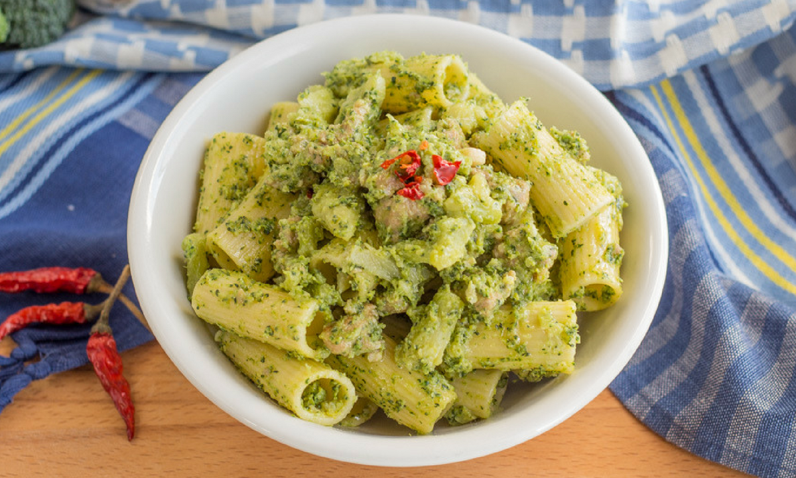

Pasta with Salsicia and Broccoli

Description
A delicious and simple to make pasta dish
Quick to make and popping with flavour thanks to the fresh fennel flavour, hot chilli and creamy broccoli and parmesan
Ingredients
- Rigatoni or thick pasta of choice
- One salsicia, out of it's skin
- One broccoli
- Fennel seeds
- Dried chilli
- Garlic
Steps
- Chop broccoli into florets and stem, with thick outer skin discarded, into strips
- Put water on to cook with a pich of salt add chopped broccoli
- Fry the sausage meat with fennel seeds and chilli
- Add pasta to the boiling broccoli
- Add garlic to frying sausage meat being careful not to burn
- Drain pasta and broccoli, mix with sausage meat, grate parmesan on top
- Serve